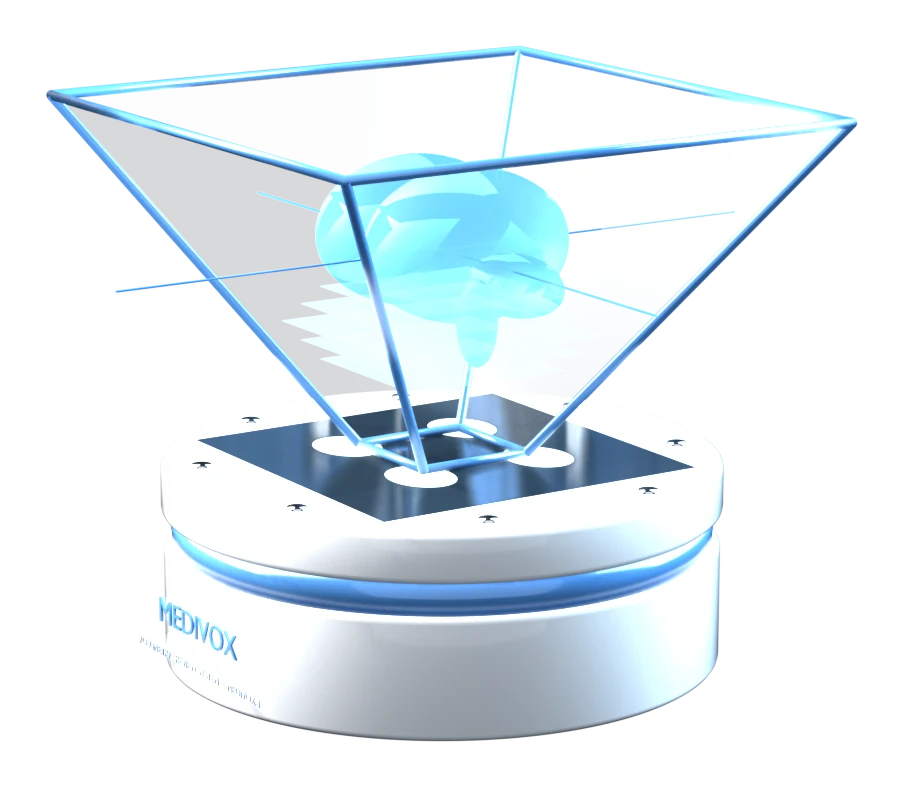
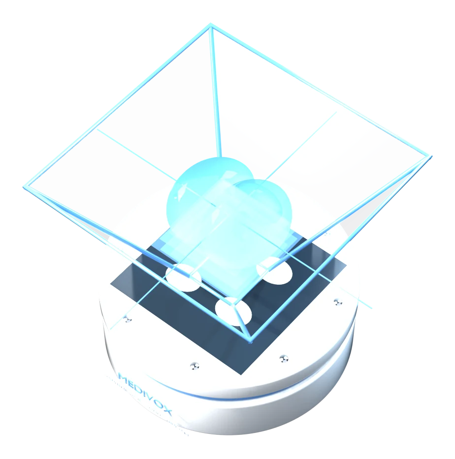
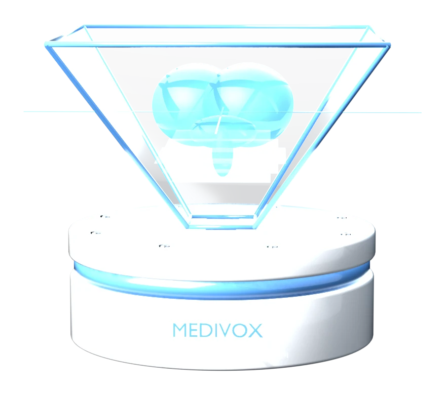
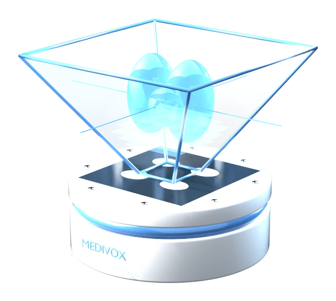
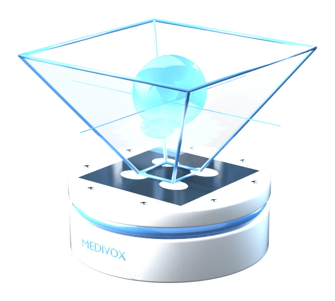
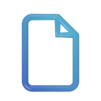

Flat-panel viewers
Precise and familiar, but two-dimensional. The reader rebuilds the 3D shape mentally, one slice at a time.
- 2D only
- Single reader
MEDIVOX turns CT and MRI series into a floating 3D image inside a glass prism that a whole team can walk around and review together. No headset, no glasses, nothing to touch, and no files uploaded.
Four-view emitter output · live, rendered in your browser
A white ceramic base holds a four-quadrant emitter panel. The inverted glass prism above it folds the four views into one form that appears to float.





Every image above is a 3D render built by tools/blender/bangun-produk.py
through the Blender command line. None of them are photos or stock images.
Precise and familiar, but two-dimensional. The reader rebuilds the 3D shape mentally, one slice at a time.

A floating 3D image the whole team sees from any side, controlled by voice and gesture.
Immersive, but they isolate the wearer from colleagues and patients and add hygiene overhead.
The optics are Pepper’s ghost, a reflection trick over a century old. What is new is the image source: a volume computed directly from your DICOM files.

Files are read with the File API and parsed by our own DICOM parser, in memory. Nothing is uploaded.
Slices are ordered by header geometry, spacing is measured, and a voxel grid is built at true millimetre scale.
Rays are cast through the volume from every angle. Four views 90° apart are laid out around the screen centre.
Speak a command or swipe a hand in front of the camera. The hologram rotates, scales or switches mode.
In a sterile field or around a crowded table, nobody wants to reach for a mouse. MEDIVOX listens for a short list of commands and follows a hand in front of the camera.
Voice uses the browser’s speech recognition. In Chrome that service sends audio to Google, which the app says plainly before the microphone starts. Camera frames for gestures are processed in the browser and discarded.
Rotate, stop, faster, slower, zoom, mirror, full screen, reset, switch rendering mode, or name an organ in the anatomy atlas.
Move a hand left or right in front of the camera and the hologram turns with it.
Bring the hand closer to enlarge, move it away to shrink. The mapping is smoothed so the image never jitters.
From the moment a study arrives to the signed report, without switching apps.
A hologram is ideal for shape and spatial relationships, but measurement and fine reading still need flat slices. The 2D viewer is complete, and it is also where the 3D volume is built.
Everyone around the table looks at the same lesion, each from their own side.
Walk through the approach in 3D before the first incision.
Voice and gesture control, with nothing to touch.
Residents and students see anatomy as it really sits in space.
Explain a finding in a way patients can actually picture.
Parsing and rendering run locally. Pixels never leave the device.
Any flat screen laid face-up can act as the emitter, and an inexpensive acrylic pyramid can serve as the prism. MEDIVOX is a visualisation and communication aid, not a primary diagnostic display.
Try it now, no prism neededNo. Files are read with the File API and parsed directly in the browser. No network request carries their contents. Signed-in users only sync reading status and report text.
Implicit VR Little Endian, Explicit VR Little Endian and Big Endian, and Deflated Explicit VR, for native 8- and 16-bit pixel data, multi-frame, palette colour and 1-bit segmentation. Baseline JPEG displays. JPEG 2000, JPEG-LS and RLE are recognised and reported clearly, but need an extra decoder.
The Web Speech API in Chrome sends audio to Google’s speech service. It is the only part of the system that sends anything off the device, so it is always off until you turn it on, with a warning. Gestures are processed locally.
No. This is an interface prototype, not a certified medical device. Diagnostic use would require clinical validation, display calibration and regulatory approval.
No. The hologram stage runs on any screen. A tablet laid flat with an acrylic pyramid on top already works, and without a prism you still see four rotating projections at once.
The stage opens with a demo phantom. No sign-in and no prism are needed to start.